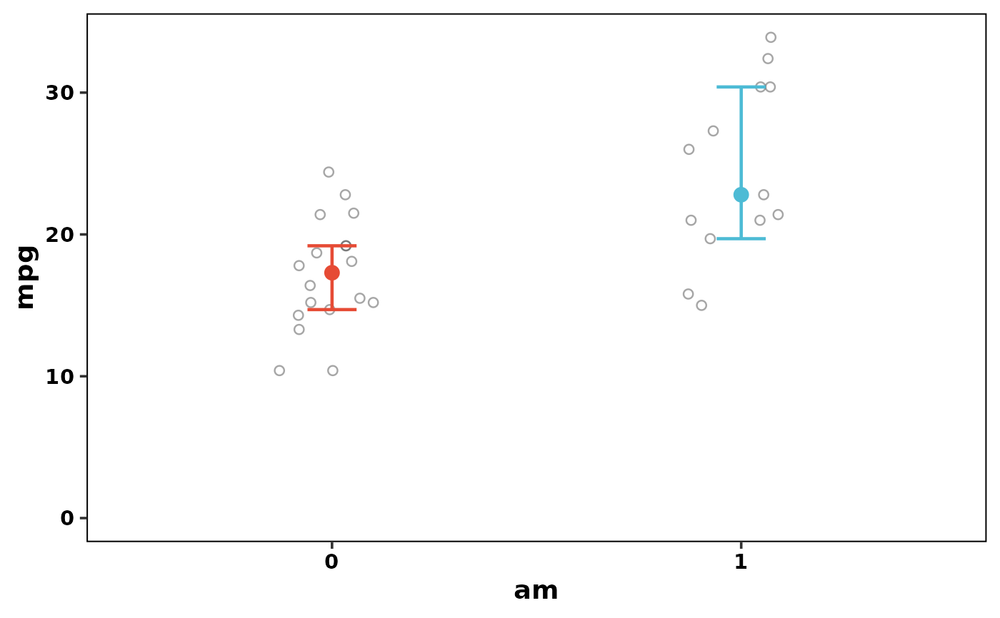

Perform multiple Wilcoxon rank sum and signed rank tests with inspection and visualization.
Source:R/fwilcox_test.R
f_wilcox_test.RdPerforms One-sample (Wilcoxon signed rank), Two-sample independent (Wilcoxon rank sum / Mann-Whitney U), or Paired (Wilcoxon signed rank) tests on a given dataset. Several response parameters can be analysed in sequence (formula interface). Additionally, a vector interface similar to stats::wilcox.test() is supported.
Usage
f_wilcox_test(x, ...)
# S3 method for class 'formula'
f_wilcox_test(
formula,
data = NULL,
paired = FALSE,
conf.level = NULL,
mu = 0,
alternative = "two.sided",
norm_plots = TRUE,
alpha = 0.05,
intro_text = TRUE,
close_generated_files = FALSE,
open_generated_files = TRUE,
output_type = "default",
save_as = NULL,
save_in_wdir = FALSE,
...
)
# Default S3 method
f_wilcox_test(
x,
y = NULL,
paired = FALSE,
conf.level = NULL,
mu = 0,
alternative = "two.sided",
norm_plots = TRUE,
alpha = 0.05,
intro_text = TRUE,
close_generated_files = FALSE,
open_generated_files = TRUE,
output_type = "default",
save_as = NULL,
save_in_wdir = FALSE,
...
)Arguments
- x
Numeric vector of data values (one-sample or first group for two-sample), or a formula of the form
response ~ grouporresponse ~ 1.- ...
For the formula method: additional arguments forwarded to the row-filtering step. The arguments
subsetandna.actionare honored: when supplied, they are spliced (still unevaluated) into amodel.framecall built once before the per-response loop, so thesubsetexpression is evaluated in the data's column scope (e.g.subset = cyl == 6works). All responses in a multi-response call (y1 + y2 ~ group) are then tested on the identical row set. For the default (vector) method,...is currently unused.- formula
A formula specifying the model (alternative to using x/y).
Two-sample (Independent/Paired):
response ~ group(where group has exactly 2 levels).One-sample:
response ~ 1orresponse ~ NULL.
More response variables can be added using
+(e.g.,y1 + y2 ~ group).- data
A data frame containing the variables when using the formula interface.
- paired
Logical. If
TRUE, performs a paired Wilcoxon test. Note on row order: For the formula interface, data must be sorted so that the observations in the two groups match row-for-row (i.e. row 1 of group 1 is paired with row 1 of group 2). For the vector interface,xandymust have the same length.Note on factor level order: The formula interface computes differences as
level1 - level2based on factor level order, which defaults to alphabetical. To control the direction, set the reference level explicitly:# Set levels at creation group <- factor(group, levels = c("pre", "post")) # Or relevel an existing factor group <- relevel(group, ref = "pre")A reversed level order flips the sign of the estimate and CI but does not affect the W statistic or p-value.
- conf.level
Numeric. Confidence level of the interval. Default is
1 - alpha. Ifconf.levelis specified, thenalpha <- 1 - conf.level.- mu
Numeric. The hypothesised value of the pseudo-median (one-sample) or location shift (paired/two-sample) under H0. Default is 0.
- alternative
Character string.
"two.sided"(default),"greater", or"less".- norm_plots
Logical. If
TRUE, descriptive diagnostic plots are included in the output. Default isTRUE.- alpha
Numeric. Significance level. Default is
0.05.- intro_text
Logical. If
TRUE, includes explanation about Wilcoxon test assumptions.- close_generated_files
Logical. Closes open Excel/Word files before writing. Works on Windows (taskkill), macOS (pkill) and Linux (pkill/soffice). Default
FALSE. WARNING: Always save your work before using this option!- open_generated_files
Logical. Whether to open the generated output files after creation. Defaults to
TRUEin an interactive R session andFALSEotherwise (e.g. in scripts or automated pipelines). Set toTRUEorFALSEto override this behaviour explicitly.- output_type
Character string specifying the output format. Default is
"default"."default": Returns the object and lets R decide whether to print; auto-prints if unassigned, silent if assigned to a variable. Useprint(result)orplot(result)to display the returned object."console": Forces immediate printing to the console regardless of object assignment."pdf","word","excel": Saves results to a file of the corresponding format. Seesave_as,save_in_wdir, andopen_generated_filesfor file path and opening behavior."rmd": Stores the raw markdown string inside the returned object for use in R Markdown documents.
- save_as
Character. Specific path/filename for output.
- save_in_wdir
Logical. Save in working directory.
- y
Optional numeric vector (second group) for two-sample tests if using the vector interface. Ignored when a formula is supplied.
Value
An object of class 'f_wilcox_test', a named list with one
element per response variable. Each element contains the
stats::wilcox.test() result, the formatted console/markdown text
blocks, the diagnostic plot file path, and a publication-ready main effect
plot as a ggplot2 object (main_effect_plot). The plot shows
the estimated parameter with its confidence interval against the raw data:
the two group medians each with a distribution-free median confidence
interval (two-sample), the sample pseudo-median (Hodges-Lehmann estimate)
with a reference line at mu (one-sample), or the pseudo-median of
the per-pair differences with a reference line at mu (paired).
Median vs Pseudo-median
By default this function calls stats::wilcox.test(conf.int = TRUE),
which bases its confidence interval and hypothesis test on the
Hodges-Lehmann estimator, not the raw sample median. This is
standard behaviour of the Wilcoxon test, not something specific to this
function. This function explicitly labels the estimator for what it is,
because it is commonly mislabelled as "CI for the median" in textbooks
and software output.
The estimator works differently depending on the test type:
One-sample: The pseudo-median is the middle value of all possible pairwise averages of your data points (including each value paired with itself). For a perfectly symmetric distribution it equals the sample median; for skewed data the two can differ.
Paired: The paired differences (observation 1 minus observation 2 within each pair) are computed first, and the pseudo-median of those differences is estimated. This is conceptually a one-sample problem applied to the differences, not a comparison of two independent groups. The CI is for the pseudo-median of the differences, not for the difference between the two separate sample medians.
Two-sample independent: The location shift is the median of all \(n_1 \times n_2\) pairwise differences (one value from Group 1 minus one from Group 2). It answers: by how much does a randomly chosen value from Group 1 tend to exceed a randomly chosen value from Group 2? When both groups have the same distributional shape it equals the raw difference in sample medians; when shapes differ, the two values can diverge.
In all three cases the sample median(s) are reported separately for descriptive purposes only.
Examples
# \donttest{
# Two-sample Wilcoxon rank-sum test
f_wilcox_test(mpg ~ am, data = mtcars, output_type = "console")
#>
#> ==========================================================
#> Wilcoxon rank sum exact test (two.sided) of:mpg
#> ==========================================================
#>
#> SAMPLE STATISTICS:
#> Median 0: 17.3
#> Median 1: 22.8
#> Raw difference (0 - 1): -5.5
#>
#> HYPOTHESES:
#> H0: True location shift (0 - 1, Hodges-Lehmann) is equal to 0.
#> H1: True location shift (0 - 1, Hodges-Lehmann) is not equal to 0.
#>
#> TEST RESULTS:
#> W = 42, p-value = 1.159e-03*-> Significant, H0 is rejected (p ≤ α = 0.05)
#>
#> ESTIMATE:
#> Location shift (Hodges-Lehmann): -6.8
#> 95% CI: [ -11.3, -2.9 ]
#>
#> Note on the CI:
#> This interval is for the location shift (Hodges-Lehmann estimator); the median of all possible pairwise differences between your two groups. If both groups have the same distributional shape, this equals the raw median difference. When shapes differ they can diverge, which is why the CI may not be centred on the difference in sample medians. Both the raw median difference and the location shift are valid descriptions of the gap between groups; they just measure it slightly differently (see `?f_wilcox_test` for details).
#>
#>
# Retrieve and customise the stored main effect plot (ggplot object)
result <- f_wilcox_test(mpg ~ am, data = mtcars, output_type = "default")
result[["mpg"]]$main_effect_plot

# }